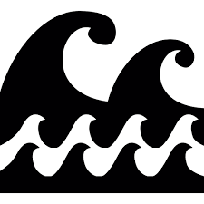

Metas

Poluição Marinha
Até 2025, prevenir e reduzir significativamente a poluição marinha de todos os tipos, especialmente atividades terrestres, incluindo detritos marinhos e a poluição por nutrientes.

Zonas Costeiras e Marinhas
Até 2020, conservar pelo menos 10% das zonas costeiras e marinhas, de acordo com a legislação nacional e internacional, e com base na melhor informação científica disponível.

Pesca Ilegal
Até 2020, regular a coleta, e acabar com a sobrepesca, ilegal, não reportada e não regulamentada e as práticas de pesca destrutivas, e implementar planos de gestão com base científica.

Uso sustentável dos Oceanos
Assegurar a conservação e o uso sustentável dos oceanos e seus recursos pela implementação do direito internacional, conforme registrado no parágrafo 158 do “Futuro Que Queremos”.